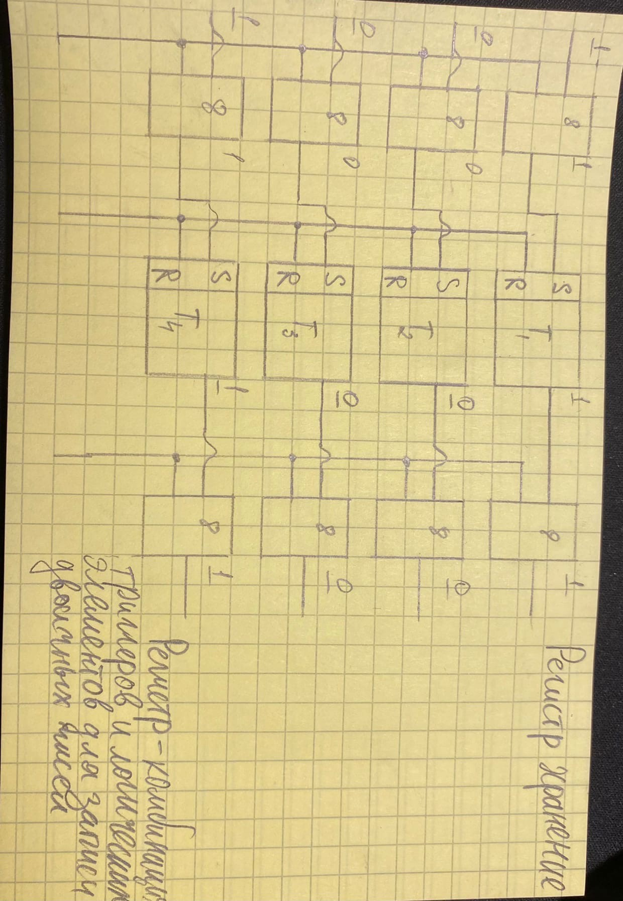
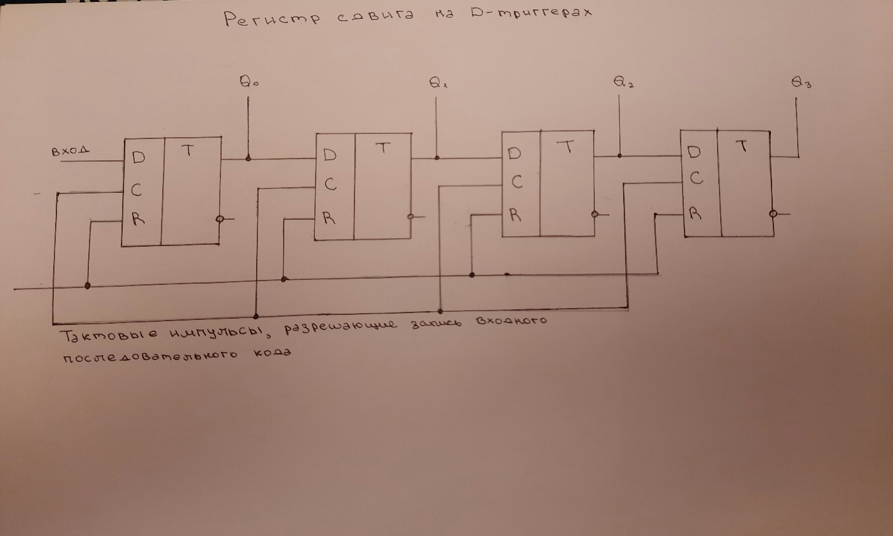
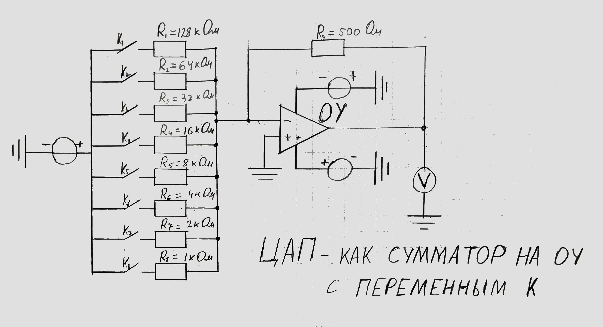
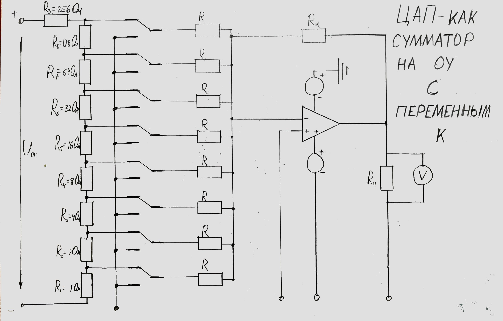
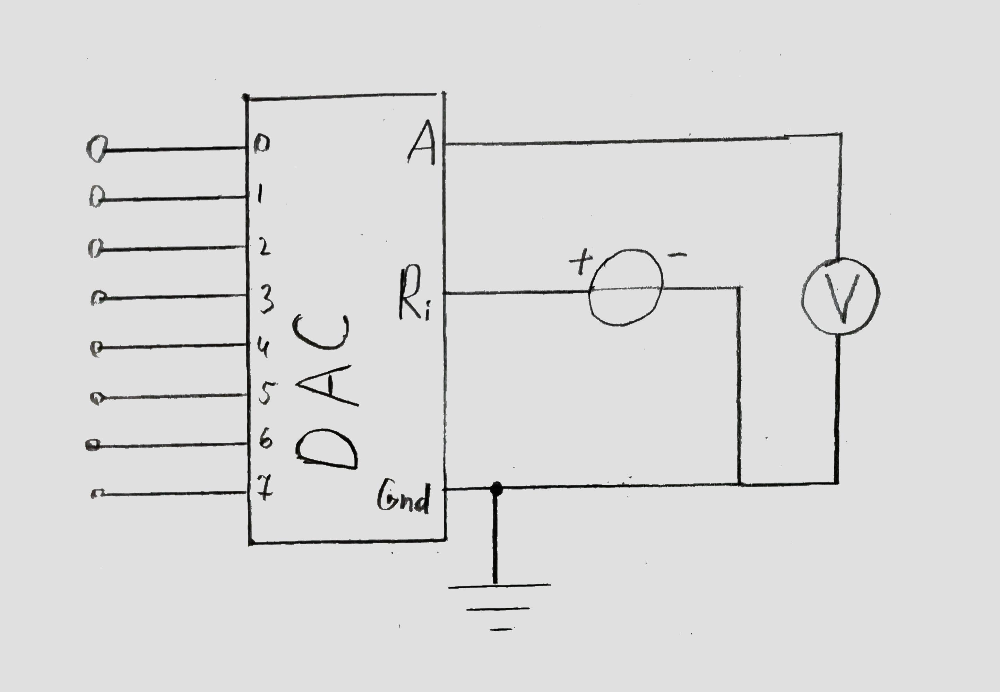

Для выполнения этой задачи нам потребовалось, используя программу TINA, смоделировать схему 4-ех разрядного регистра хранения на базе асинхронных RS триггеров, приведённую ниже:
Данное устройство должно хранить в себе двоичный код и преобразовывать этот код в десятичное число.
Для выполнения этой задачи нам потребовалось, используя программу TINA, смоделировать схему 4-ех разрядного регистра сдвига на базе D-триггеров, приведённую ниже:
Данное устройство должно преобразовать входной последовательный двоичный код, далее необходимо зафиксировать его преобразование в параллельный код.
Для выполнения этой задачи нам потребовалось, используя программу TINA, смоделировать схему ЦАП, как сумматора на базе ОУ с переменным К, приведённую ниже:
Данное устройство должно преобразовать входной двоичный код, задающийся с помощью ключей Kn в соответствующий ему аналоговый сигнал. Для нашей модели, использующей восьмиразрядный код, шаг дискретизации должен составлять Uвх/28.
Для выполнения поставленной задачи, мы воспользуемся схемой с сайта проффессора В.Л. Шатуновского "Web-самоучитель 'Электроника и схемотехника'":
Данное устройство должно преобразовать входной двоичный код, задающийся с помощью ключей Kn в соответствующий ему аналоговый сигнал. Мы должны добиться того, чтобы напряжение в ветвях схемы каждого разряда суммировалось, давая на выходе выходной аналоговый сигнал.
Для выполнения поставленной задачи, мы воспользуемся схемой ЦАП на специальной микросхеме в программе TINA c сайта "Web-самоучитель 'Электроника и схемотехника'":
В ходе решения данной задачи мы должны получить модель, работающуюю аналогично моделям из заданий 3 и 4.